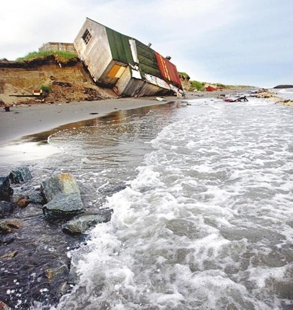

- HTML
- CSS
- JavaScript
HTML이란 무엇인가
Monica Anna Maria Bellucci is an Italian actress and model. Bellucci began her career as a fashion model, modeling for the likes of Dolce & Gabbana and Dior, before making a transition to Italian films and later Hollywood films. She is often considered among the most beautiful women in the worldBellucci met French actor Vincent Cassel on the set of their 1996 film The Apartment.[29] They married in 1999,[29] and have two daughters, Deva (born 2004) and Léonie (born 2010).[30][31] Bellucci and Cassel announced their divorce on 26 August 2013.[29]
In the documentary movie The Big Question, about the film The Passion of the Christ, she stated

: "I am an agnostic, even though I respect and am interested in all religions. If there's something I believe in, it's a mysterious energy; the one that fills the oceans during tides, the one that unites nature and beings."